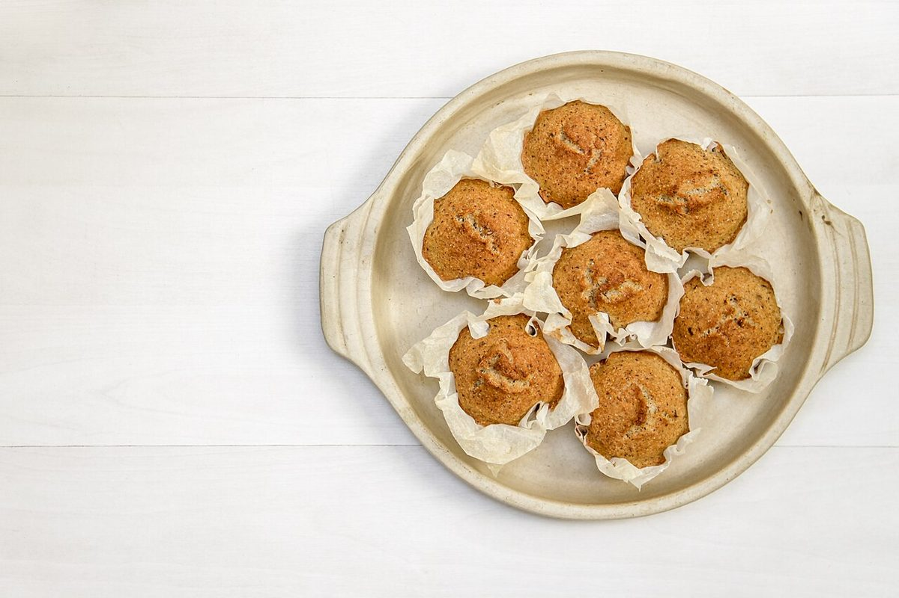

制作側の連想
木製玩具の汽車を、配置図にしてみる
このサイトは、机の上を走る木の汽車のおもちゃを図にしたつもりで作りました。六つの部位に番号をふり、上の図と並べています。制作側の連想で、お店の理念・由来とは無関係です。実在の玩具の仕様を示すものでもありません。
凡例
六つの部位
- 1煙突機関車の先頭に立つ、赤く塗った筒の形のパーツ。
- 2ボイラー木をまるく削った、青い円筒の胴体。
- 3運転台胴体のうしろに立つ、窓のある屋根つきの小部屋。
- 4車輪レールの上を転がる、丸い木のパーツ。
- 5連結磁石前の車両と次の車両を、ぴたっとつなぐ小さな磁石。
- 6貨車機関車に引かれる、荷をのせるための長い車両。
写真(イメージ)
パンとお菓子の写真


写真はパンのイメージです。お店のものではなく、お店で提供している商品を示すものでもありません。
写真(イメージ)
コーヒー道具の写真



写真はコーヒー豆や道具、焼き菓子のイメージです。お店のものではありません。
ご案内
お店のこと(確認できたものだけ)
| 所在地 | 〒276-0020 千葉県八千代市勝田台北1丁目21-26 |
|---|---|
| 電話 | 準備中 |
| 営業時間 | 準備中 |
| 定休日 | 準備中 |
| ご予約 | 準備中 |
| 駐車場 | 準備中 |
| SNS | Instagram @toonbocafe |